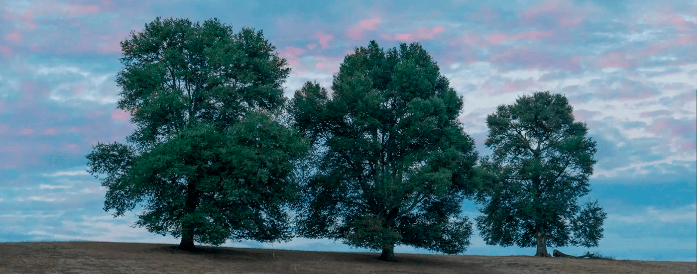

Flora across regions
Spanning over 4.300 km north to south, Chile's climate ranges from the world's driest desert in the north—the Atacama Desert—through a Mediterranean climate in the center, to an oceanic climate in the south. This varied climate is reflected on a beautiful and extensive flora all across the country.
Our community maintains a complete and expanding catalog of trees, bushes, climbing and herbaceous plants, etc., which you can check out by joining the community. Here are some of the notorious examples from the main climatic regions of Chile
"Norte Grande" (Far North)
“Algarrobo blanco” (Prosopis alba Griseb)
Description: Tree that grows up to 12 meters of height and 1 meter of diameter. It has little yellow-green flowers. Its fruit is a pod, with around 12 seeds.
Habitat: Interior valleys. Sunny, arid terrain.
Uses: The fruit pulp is edible raw, and it can be used to make flour. It is also used as an antispasmodic for the treatment of symptoms and signs of stomach conditions.
“Norte Chico” (Near North):
“Maqui” (Aristotelia chilensis (Molina) Stuntz)
Description: Bush that grows up to 3-4 meters of height. It is evergreen, it has reddish-brown stems and black-violet berries as its fruit.
Habitat: Humid and shady places, hillsides, edge of forests.
Uses: The fruit is sweet and is consumed fresh or dehydrated. The dehydrated fruit can be used to make juice or it can be added to desserts. The leaves are used to control fevers in children, and they can be used to heal wounds and scars.
“Zona Central” (Central Chile):
“Arrayán” (Luma apiculata (DC.) Burret)
Description: Evergreen tree that grows up to 20 meters of height, with abundant foliage. It has small white flowers, and small dark berries.
Habitat: It grows in terrain with a lot of humidity, like the edge of rivers, springs and lakes.
Uses: The berries are sweet and can be eaten raw, or be used to make drinks and dessert sauce. The leaves, stems and roots can be used as an astringent to treat the stomach.
“Zona Sur” (Southern Zone):
“Araucaria”, “Pehuén” (Araucaria araucana (Molina) K. Koch)
Description: Tree that grows up to 50 meters of height, with a straight and cylindrical trunk. The branches start far from the ground. It can live for 1000 years.
Habitat: Rocky, arid or volcanic terrain
Uses: The seeds (called “piñones”) can be eaten cooked, roasted or in a stew. The resin can be used to treat scars.
“Zona Austral” (Austral Zone):
“Maitén” (Maytenus boaria Mol.)
Description: Tree that grows up to 15 meters of height. Small leaves, yellow-green flowers, small fruit
Habitat: It grows on the lower slopes of Los Andes and La Costa mountain ranges, preferably close to estuaries and rivers, in places that are not excessively humid.
Uses: The spring sprouts are eaten in salads and tortillas. The seeds can be used to make an oil that can replace linseed oil.